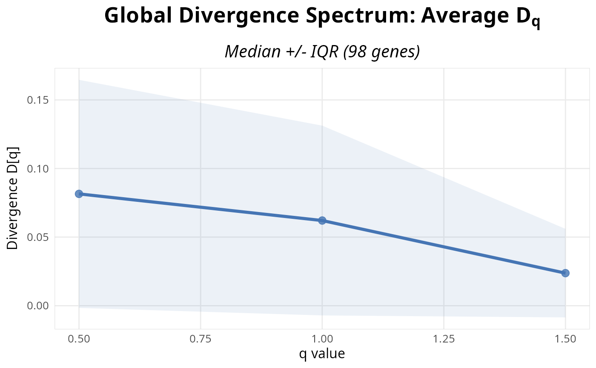

R/s4_functions.R
plot_divergence_spectrum_s4.RdS4 wrapper that extracts divergence results from a TSENATAnalysis object and visualizes the average Tsallis divergence across all genes (or specified genes) as a function of q-value.
TSENATAnalysis object with divergence results
(typically via calculate_divergence_s4).
character. Optional specific gene name to plot.
If NULL, plots global divergence curve (aggregated across all genes).
integer. Number of top genes to plot when showing
multi-gene spectra. Default is 4. Genes are sorted by p-value significance.
integer. Number of columns in grid layout for multi-gene
plots. Default is 2. Number of rows is automatically calculated.
character. Summary statistic for global curve:
'median' (default) or 'mean'. Only used when gene = NULL.
character. Error bar type for global curve:
'iqr' (default) or 'sd'. Only used when gene = NULL.
logical. If TRUE,
uses LM results to rank and
display top n_genes by p-value significance. If FALSE (default), plots
global
divergence curve when gene = NULL. Default is FALSE.
character. Optional file path to save the plot.
If NULL, plot is returned but not saved.
numeric. Plot width in inches. Default is 10.
numeric. Plot height in inches. Default is 6.
logical. Print status messages. Default is TRUE.
Additional arguments passed to the underlying plotting function.
Invisibly returns the file path if saved, otherwise the ggplot object. If the plot cannot be created (missing data, ggplot2 not available), returns NULL invisibly with an informative message.
This wrapper extracts the divergence SummarizedExperiment from
analysis@divergence_results and optionally the LM results from
analysis@lm_results$lm_interaction to pass to the base function.
**Data Requirements:**
Divergence must be computed via calculate_divergence_s4()
@divergence_results$divergence_se or direct divergence SE
**Modes:**
Global mode (gene = NULL): Shows median/mean divergence across all genes with variability bands
Gene-specific mode (gene specified): Shows divergence spectrum for a single named gene
Top genes mode (gene = NULL, lm_res provided): Shows top n_genes by significance
calculate_divergence_s4 for computing divergence.
# Load example data (matching TSENAT.Rmd workflow)
data(readcounts)
readcounts <- as.matrix(readcounts)
mode(readcounts) <- 'numeric'
metadata_df <- read.table(
system.file('extdata', 'metadata.tsv', package = 'TSENAT'),
header = TRUE, sep = '\t'
)
gff3_dataset <- system.file('extdata', 'annotation.gff3.gz', package =
'TSENAT')
# Build analysis from vignette data and create small subset
analysis <- build_analysis_s4(readcounts = readcounts, tx2gene =
gff3_dataset, metadata = metadata_df,
tpm = tpm, effective_length = effective_length)
analysis <- filter_analysis_s4(analysis, min_samples = 1, subset_n_genes
= 200)
analysis <- calculate_diversity_s4(analysis, q = c(0.5, 1, 1.5), verbose
= FALSE)
analysis <- calculate_divergence_s4(analysis, q = c(0.5, 1, 1.5), verbose
= FALSE)
p_global <- plot_divergence_spectrum_s4(analysis)
print(p_global)
